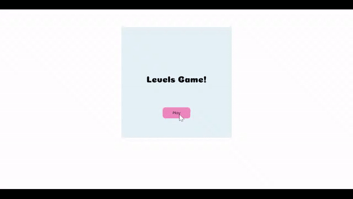
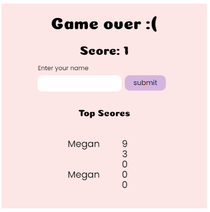
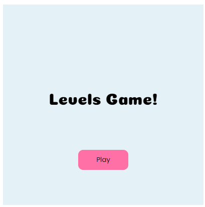
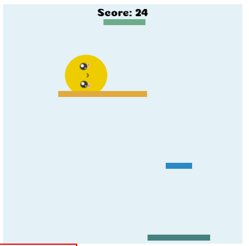

Overview and Usage
My final project is a game using the p5 js library. My game can be
played here.

Development Process
-
My MVP already had the main functionality of the game and the
leaderboard database connection. The next thing I added was formatting
the data in a more appealing way. In my final version, the data is
displayed only on the game over page. I also revised the styling to
vary the font size and font type by importing Google fonts.

-
I changed the button styles by rounding the corners and positioned it
to be in the middle of the canvas.

-
I randomized the width of the platforms to make the game more
interesting.

Issue Deep-Dive
I had a lot of difficulty positioning the button and text input
elements. I wanted them to be inside the canvas but it seemed like they
were separate elements. I tried using the .parent() function to attach
them to a div. This didn't work because the button would be positioned
next to the canvas when I wanted it to be in the center. I spent a lot
of time Googling. Eventually, I realized the elements were created in
the DOM so that was messing with positioning. I looked into how to
position two elements on top of each other. I found
this
Stackoverflow post that suggested changing the use relative and absolute
positioning. After fiddling around in the Developer Tools panel with the
styles, I finally got it to work.
Ideas and Future Work
-
This was the same goal from my MVP. The counter right now is just
measuring the number of platforms that have appeared, I want to change
it to measure the time.
-
I achieved my goal of varying the widths of the platforms but didn't
implement the increasing speed function.
- I'd like to add some music and sound effects.
Kudos
-
Kudos to Hannah for helping me getting the database data to render
correctly.